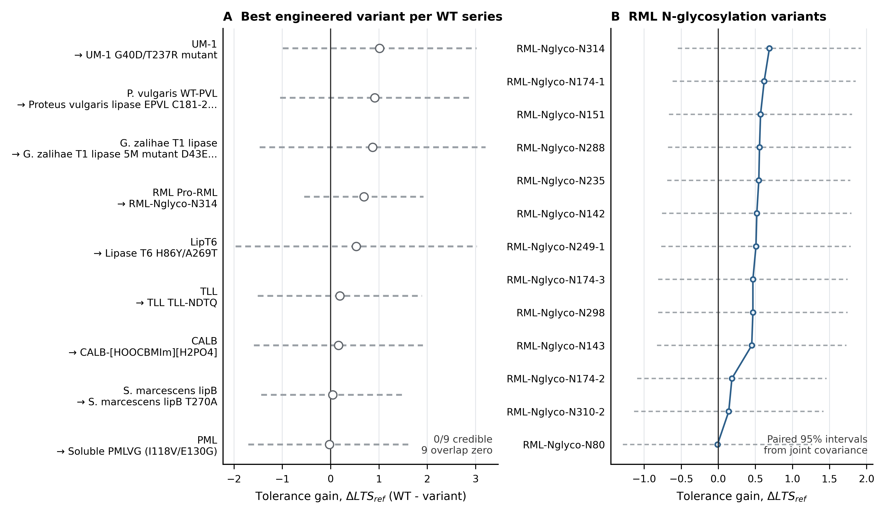

Figure 1 Parent and Variant Comparison

(Did protein engineering measurably improve methanol tolerance over the wild-type parent?)
a: For nine wild-type lipases, estimated methanol-tolerance gain of the best engineered variant vs its parent (ΔMTS = WT − variant; positive = variant more tolerant), 95% credible intervals; all nine cross zero (0/9 credible) — no variant is credibly more tolerant than its parent. b: RML N-glycosylation series ranked by estimated gain over Pro-RML (N314 highest to N80 lowest); markers are point estimates, dashed lines paired 95% intervals from the joint covariance; wide overlapping intervals mean the ranking should not be over-read.